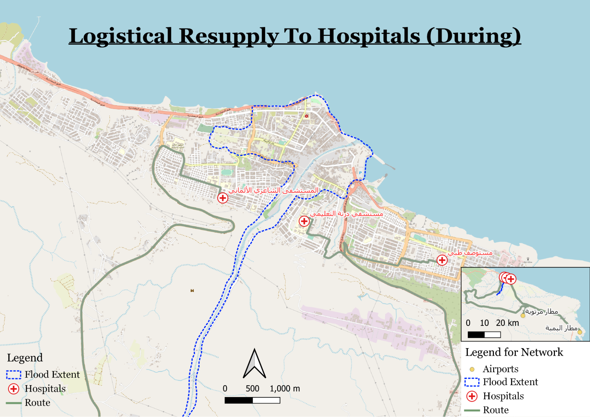

Resupply to Shelters and Hospitals
We will use suitable_shelters from the during scenario as our shelters layer.
We then use Menu Bar → Vector Tools -> Geoprocessing Tools -> Difference to find the roads outside of the flood extent. We set the input layer as gis_osm_roads_free_1 (23 oct) and the overlay layer as flood extent.
We export this file to our geopackage as osm_roads_outside_flood.
- From processing toolbox find 'Shortest path (point to layer)'
Click on 'Run as Batch Process'
For start point, click on 'Autofill' → 'Add Values by Expression'
We will be running this function four times, for start points (desalination plants and airports) to end points (shelters and hospitals).
key in this expression, swapping 'desalination plants' layer for hospital when needed
aggregate(layer:=‘desalination plants’,aggregate:=‘array_agg’,expression:=$geometry)
Change the vector representing network to 'gis_osm_roads_free_1' (the 23 oct 2023 version) for both rows
Set vector layer with endpoints to 'shelters' or 'hospitals'.
For shortest path, type 'TEMPORARY_OUTPUT' for both rows.
Remove the blank first row if needed
Click 'Run'.
We obtain this for the initial shortest path analysis (from desalination plants/airports to sheltershospitals) using OSM roads only
Export the output into the geopackage and rename them accordingly e.g. waterToSheltersDURING1
Repeat for all 4 combinations of start and end points.
We repeat the After Scenario steps with the suitable shelters and hospitals outside the flood extent.
- We will select a point on the shorter road above as our midpoint: 158336.235137,3629392.588741 [EPSG:3197]
We do the shortest path analysis from the midpoint to the desalination plant, shelters, and hospital using the usable_emsr_roads.
We then save these outputs into the geopackage.
- We will be using 169223.320567,3622521.383079 [EPSG:3197] as our midpoint from the airports, the branch point in the picture below

We do the shortest path analysis from the midpoint to the airports, shelters, and hospitals.
We then save these outputs into the geopackage.
- When mapping, we take note to update the legends and rename the road as route for simplification. This is done by temporarily renaming one of the road layers in the project window's layers panel to 'Route'.

- Also turn off 'Resize to fit content' under legend.
We get maps that look similar to this:

We are now finished with the preparation of the resupplies to shelters and hospitals maps and analysis.